Betal nut, also known as areca nut, is not a major crop in Goa due to its tropical climate. The state's warm
and humid conditions are not the most favorable for betel nut cultivation, which is more commonly grown in
regions with a subtropical or tropical climate. Consequently, betel nut cultivation is not as prevalent or
commercially significant in Goa compared to states with more suitable agro-climatic conditions. Farmers in
Goa often prioritize crops that are well-adapted to the local tropical climate, such as rice, coconut, and
cashew nuts. Andhra Pradesh, Karnataka, Odisha, and Assam are among the states where betel nut cultivation
is notable.
सुपारी, जिसे सुपारी भी कहा जाता है, अपनी उष्णकटिबंधीय
जलवायु के कारण गोवा की प्रमुख फसल नहीं है। राज्य की गर्म और आर्द्र परिस्थितियाँ सुपारी की खेती के लिए सबसे
अनुकूल नहीं हैं, जो आमतौर पर उपोष्णकटिबंधीय या उष्णकटिबंधीय जलवायु वाले क्षेत्रों में उगाई जाती है। नतीजतन,
अधिक उपयुक्त कृषि-जलवायु परिस्थितियों वाले राज्यों की तुलना में गोवा में सुपारी की खेती उतनी प्रचलित या
व्यावसायिक रूप से महत्वपूर्ण नहीं है। गोवा में किसान अक्सर उन फसलों को प्राथमिकता देते हैं जो स्थानीय
उष्णकटिबंधीय जलवायु के लिए अच्छी तरह से अनुकूलित होती हैं, जैसे चावल, नारियल और काजू। आंध्र प्रदेश, कर्नाटक, ओडिशा और असम उन राज्यों में से हैं जहां सुपारी की खेती की जाती है
सक्षम नहीं है।
6. Cocoa / 6. कोको
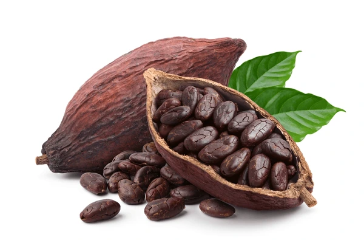
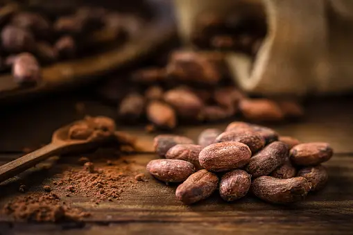
Cocoa cultivation is not a major agricultural activity in Goa due to its tropical climate. Cocoa
plants thrive in regions with specific temperature, humidity, and rainfall patterns that are typically found
in tropical rainforest areas. While Goa has a tropical climate, it may not provide the optimal conditions
for widespread cocoa cultivation. The state is more known for its cultivation of crops like rice, coconut,
and cashew nuts, which are better adapted to the local agro-climatic conditions. As agricultural practices
can evolve, it's advisable to check with local agricultural authorities for the most recent information on
cocoa cultivation in Goa.Limited cocoa cultivation in India, with some production in states like Karnataka
and Kerala.
उष्णकटिबंधीय जलवायु के कारण गोवा में कोको की खेती एक प्रमुख
कृषि गतिविधि नहीं है। कोको के पौधे विशिष्ट तापमान, आर्द्रता और वर्षा पैटर्न वाले क्षेत्रों में पनपते हैं जो
आमतौर पर उष्णकटिबंधीय वर्षावन क्षेत्रों में पाए जाते हैं। हालाँकि गोवा की जलवायु उष्णकटिबंधीय है, लेकिन यह
व्यापक रूप से कोको की खेती के लिए अनुकूलतम परिस्थितियाँ प्रदान नहीं कर सकता है। यह राज्य चावल, नारियल और काजू
जैसी फसलों की खेती के लिए अधिक जाना जाता है, जो स्थानीय कृषि-जलवायु परिस्थितियों के लिए बेहतर अनुकूल हैं। चूँकि
कृषि पद्धतियाँ विकसित हो सकती हैं, इसलिए सलाह दी जाती है कि गोवा में कोको की खेती पर नवीनतम जानकारी के लिए
स्थानीय कृषि अधिकारियों से जाँच करें। भारत में कोको की सीमित खेती, कर्नाटक जैसे राज्यों में कुछ उत्पादन के साथ
और केरल.
7. Tobacco / 7. तम्बाकू
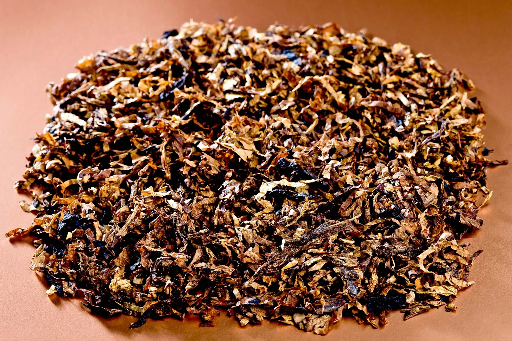
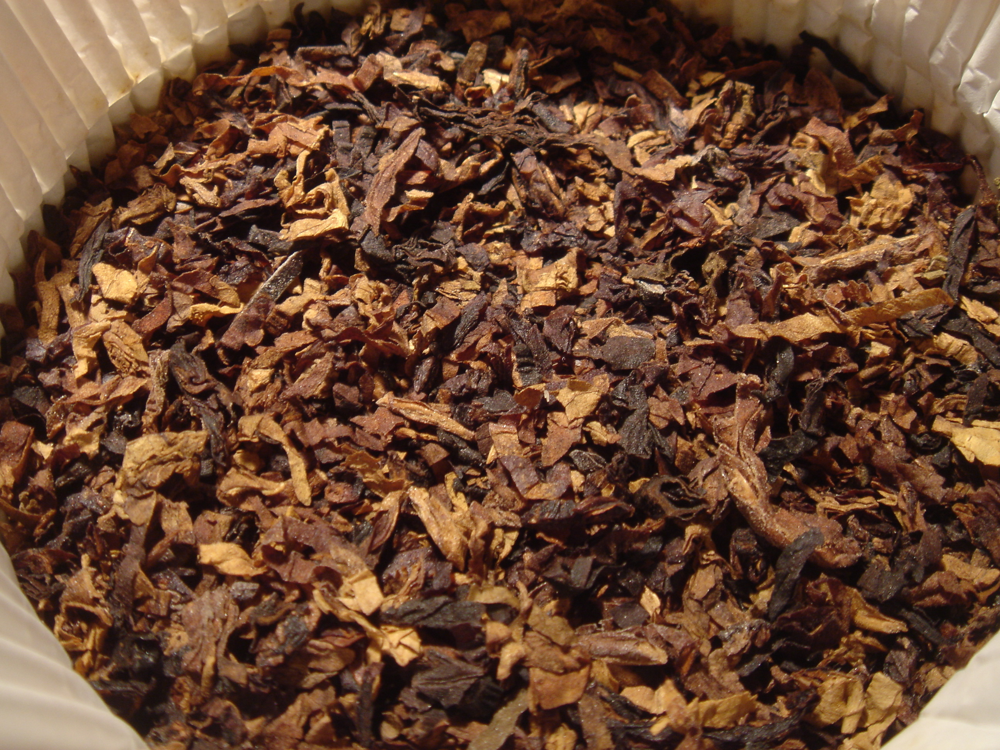
Tobacco cultivation in Goa has been historically significant, especially for the production of the country's
well-known "Goan tobacco." The state's tobacco cultivation is often associated with the Virginia variety,
known for its use in cigarette manufacturing. Tobacco cultivation typically occurs during the post-monsoon
season, from October to March, to avoid the monsoon rains.
Goa has been a notable contributor to India's tobacco production, with some farmers growing tobacco as a cash
crop. However, it's important to note that tobacco cultivation is subject to regulatory frameworks, and
changes in policies may impact the cultivation landscape. Additionally, there has been a growing awareness of
health concerns related to tobacco consumption, leading to shifts in agricultural practices and
diversification of crops in some regions. For the most recent and accurate information on tobacco cultivation
in Goa, it's advisable to consult local agricultural authorities and government regulations.Major
tobacco-producing states include Andhra Pradesh, Karnataka, Gujarat, Tamil Nadu, and parts of West Bengal.
गोवा में तम्बाकू की खेती ऐतिहासिक रूप से महत्वपूर्ण रही है, विशेष रूप से देश के प्रसिद्ध "गोवा तम्बाकू" के
उत्पादन के लिए। राज्य की तम्बाकू खेती अक्सर वर्जीनिया किस्म से जुड़ी होती है, जो सिगरेट निर्माण में उपयोग के
लिए जानी जाती है। तम्बाकू की खेती आम तौर पर मानसून के बाद के मौसम में, अक्टूबर से मार्च तक, मानसून की बारिश से
बचने के लिए की जाती है।
भारत के तम्बाकू उत्पादन में गोवा का उल्लेखनीय योगदान रहा है, जहाँ कुछ किसान तम्बाकू को नकदी फसल के रूप में
उगाते हैं। हालाँकि, यह ध्यान रखना महत्वपूर्ण है कि तंबाकू की खेती नियामक ढांचे के अधीन है, और नीतियों में
बदलाव से खेती के परिदृश्य पर असर पड़ सकता है। इसके अतिरिक्त, तम्बाकू सेवन से संबंधित स्वास्थ्य संबंधी चिंताओं
के बारे में जागरूकता बढ़ रही है, जिससे कुछ क्षेत्रों में कृषि पद्धतियों में बदलाव और फसलों के विविधीकरण में
वृद्धि हुई है। गोवा में तंबाकू की खेती पर नवीनतम और सटीक जानकारी के लिए, स्थानीय कृषि अधिकारियों और सरकारी
नियमों से परामर्श करना उचित है। प्रमुख
तम्बाकू उत्पादक राज्यों में आंध्र प्रदेश, कर्नाटक, गुजरात, तमिलनाडु और पश्चिम बंगाल के कुछ हिस्से शामिल हैं।
8. Maize / 8. मक्के


Maize cultivation in Goa is not as prevalent as in some other states due to the state's limited land area and
a focus on other crops better suited to the tropical climate. However, farmers in Goa do cultivate maize to
meet local demand. Maize is typically grown during the monsoon season and the post-monsoon period, taking
advantage of the available rainfall.
The soil requirement for maize cultivation in Goa is well-drained, fertile soil with good organic content.
Adequate rainfall during the growing season is essential for a successful maize crop. While maize cultivation
may not be a dominant agricultural activity in Goa, it plays a role in diversifying crops and meeting local
nutritional needs. Farmers often rotate maize with other crops to maintain soil fertility and sustainability.
For the most up-to-date information on maize cultivation in Goa, consulting local agricultural authorities is
recommended. Madhya Pradesh, Karnataka, Andhra Pradesh, Maharashtra, and Bihar are among the states with
notable maize cultivation.
राज्य के सीमित भूमि क्षेत्र और उष्णकटिबंधीय जलवायु के लिए बेहतर अनुकूल अन्य फसलों पर ध्यान केंद्रित करने के
कारण गोवा में मक्के की खेती कुछ अन्य राज्यों की तरह प्रचलित नहीं है। हालाँकि, गोवा में किसान स्थानीय माँग को
पूरा करने के लिए मक्के की खेती करते हैं। मक्का आमतौर पर मानसून के मौसम और मानसून के बाद की अवधि में उपलब्ध
वर्षा का लाभ उठाते हुए उगाया जाता है।
गोवा में मक्के की खेती के लिए मिट्टी की आवश्यकता अच्छी जल निकासी वाली, अच्छी जैविक सामग्री वाली उपजाऊ मिट्टी
है। मक्के की सफल फसल के लिए बढ़ते मौसम के दौरान पर्याप्त वर्षा आवश्यक है। हालांकि मक्के की खेती गोवा में एक
प्रमुख कृषि गतिविधि नहीं हो सकती है, लेकिन यह फसलों में विविधता लाने और स्थानीय पोषण संबंधी जरूरतों को पूरा
करने में भूमिका निभाती है। मिट्टी की उर्वरता और स्थिरता बनाए रखने के लिए किसान अक्सर अन्य फसलों के साथ मक्का
उगाते हैं। गोवा में मक्के की खेती के बारे में नवीनतम जानकारी के लिए, स्थानीय कृषि अधिकारियों से परामर्श करने
की सिफारिश की जाती है। मध्य प्रदेश, कर्नाटक, आंध्र प्रदेश, महाराष्ट्र और बिहार उन राज्यों में से हैं
उल्लेखनीय मक्के की खेती.
9. Jute / 9. जूट
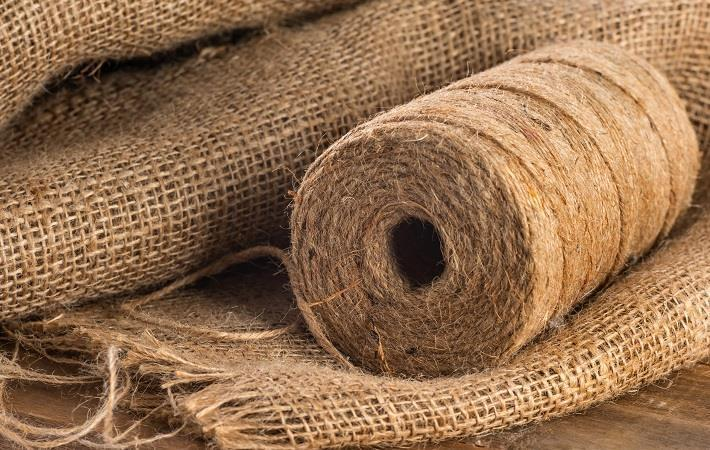

Jute cultivation is not a common practice in Goa due to its tropical climate, which may not provide the most
favorable conditions for this fiber crop. Jute is primarily cultivated in regions with a subtropical climate,
and Goa's warm and humid weather may not be ideal for its growth.
In India, jute cultivation is more prevalent in states like West Bengal, Bihar, Assam, and Odisha, where the
climate and soil conditions are conducive to jute production. These states have a significant share in the
country's jute cultivation and contribute to India's position as one of the leading jute-producing nations
globally.
Given the climatic differences, farmers in Goa typically focus on crops that are better suited to the local
conditions, such as rice, coconut, and cashew nuts. For the most accurate and current information, it's
advisable to consult local agricultural authorities in Goa. West Bengal is the primary producer of jute in
India, and other states like Bihar and Assam also contribute.
उष्णकटिबंधीय जलवायु के कारण गोवा में जूट की खेती आम बात नहीं
है, जो इस फाइबर फसल के लिए सबसे अनुकूल परिस्थितियाँ प्रदान नहीं कर सकती है। जूट की खेती मुख्य रूप से
उपोष्णकटिबंधीय जलवायु वाले क्षेत्रों में की जाती है, और गोवा का गर्म और आर्द्र मौसम इसकी वृद्धि के लिए आदर्श
नहीं हो सकता है।
भारत में, जूट की खेती पश्चिम बंगाल, बिहार, असम और ओडिशा जैसे राज्यों में अधिक प्रचलित है, जहां की जलवायु और
मिट्टी की स्थिति जूट उत्पादन के लिए अनुकूल है। इन राज्यों की देश की जूट खेती में महत्वपूर्ण हिस्सेदारी है और
ये विश्व स्तर पर अग्रणी जूट उत्पादक देशों में से एक के रूप में भारत की स्थिति में योगदान करते हैं।
जलवायु अंतर को देखते हुए, गोवा में किसान आमतौर पर उन फसलों पर ध्यान केंद्रित करते हैं जो स्थानीय परिस्थितियों
के लिए बेहतर अनुकूल हैं, जैसे चावल, नारियल और काजू। सबसे सटीक और ताज़ा जानकारी के लिए, गोवा में स्थानीय कृषि
अधिकारियों से परामर्श करना उचित है। पश्चिम बंगाल जूट का प्रमुख उत्पादक है
भारत, और बिहार और असम जैसे अन्य राज्य भी योगदान करते हैं।
10. Betal Leaf / 10.पान के पत्ते
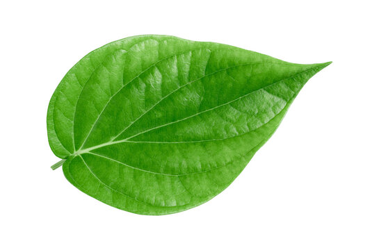
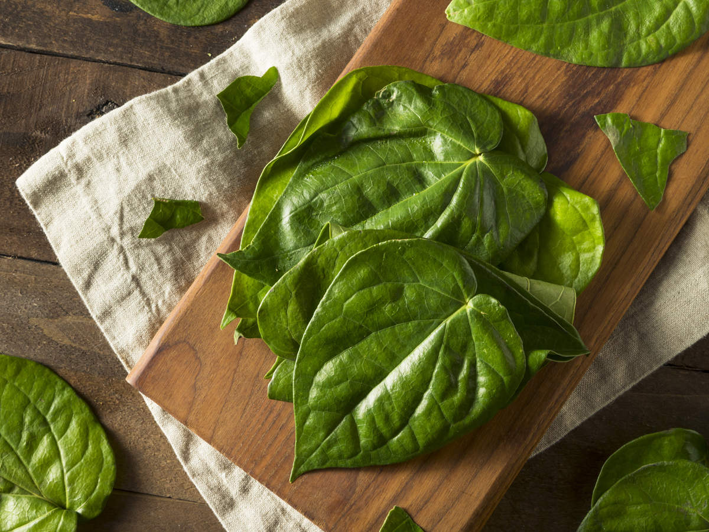
Betel leaf, commonly known as paan, is cultivated in Goa, although it may not be as predominant as in some
other regions of India. Betel leaf cultivation is influenced by the tropical climate of Goa. The warm and
humid conditions provide a suitable environment for the growth of betel vines.
The cultivation of betel leaf typically takes place in well-drained, fertile soils. Goa's agricultural
practices include the cultivation of betel leaf for local consumption and use in the traditional practice of
chewing paan.
Farmers in Goa may integrate betel leaf cultivation into their agricultural activities, alongside other crops
such as rice, coconut, and cashew nuts. As agricultural practices can vary and evolve, it's recommended to
consult with local agricultural experts or authorities for the most recent and specific information on betel
leaf cultivation in Goa.Significant demand in states like West Bengal, Bihar, Uttar Pradesh, and parts of
South India where chewing betel leaves is a cultural tradition.
.
पान के पत्ते, जिसे आमतौर पर पान के नाम से जाना जाता है, की
खेती गोवा में की जाती है, हालाँकि यह भारत के कुछ अन्य क्षेत्रों की तरह प्रमुख नहीं हो सकता है। पान के पत्ते की
खेती गोवा की उष्णकटिबंधीय जलवायु से प्रभावित है। गर्म और आर्द्र परिस्थितियाँ पान की बेलों की वृद्धि के लिए
उपयुक्त वातावरण प्रदान करती हैं।
पान के पत्ते की खेती आम तौर पर अच्छी जल निकासी वाली, उपजाऊ मिट्टी में होती है। गोवा की कृषि पद्धतियों में
स्थानीय उपभोग के लिए पान के पत्ते की खेती और पान चबाने की पारंपरिक प्रथा में उपयोग शामिल है।
गोवा में किसान चावल, नारियल और काजू जैसी अन्य फसलों के साथ-साथ पान के पत्ते की खेती को अपनी कृषि गतिविधियों
में शामिल कर सकते हैं। चूंकि कृषि पद्धतियां अलग-अलग और विकसित हो सकती हैं, इसलिए गोवा में पान के पत्ते की खेती
पर नवीनतम और विशिष्ट जानकारी के लिए स्थानीय कृषि विशेषज्ञों या अधिकारियों से परामर्श करने की सिफारिश की जाती
है। पश्चिम बंगाल, बिहार, उत्तर प्रदेश जैसे राज्यों और कुछ हिस्सों में महत्वपूर्ण मांग
दक्षिण भारत जहां पान चबाना एक सांस्कृतिक परंपरा है।


 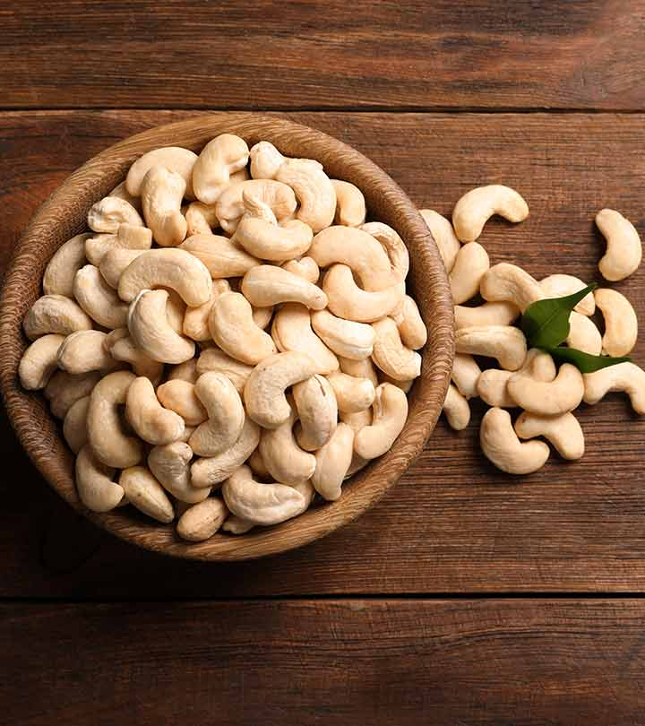
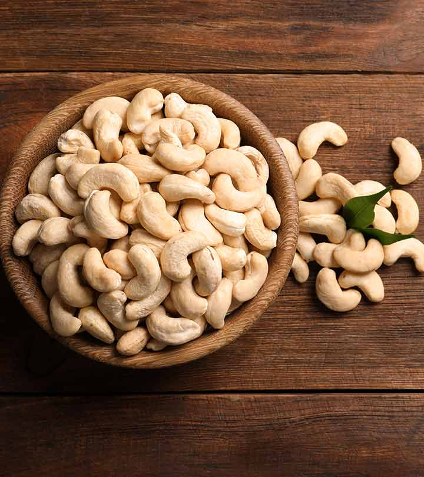
 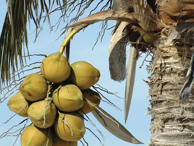
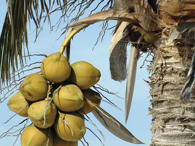